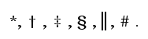
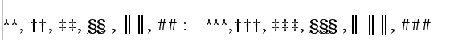

2005-December-4
A printer friendly PDF version of this page is available detailed.pdf (63Kb)
We need to add user selection for a 'Document Style' to apply to a whole document. I see two options for doing this -
Adding a new tab-panel 'Document Styles' to File>Properties.
or
Adding a new tab-panel 'Document Styles' to Format>Page. (Does Page format only apply to the current section or the whole document ?)
This tab-panel would contain a 'Document Style' selection list which include the supported styles eg APA, ASA, Chicago, MLA, German DIN, French ISO, etc. {need to collect full list.}. Also we need provision for the users to create their own styles. (See the list of BibTeX supported styles BibTeX supported styles.)
Other options in the tab panel could be such things as -
Style Data import / export; (Endnote (TM) and Refman (TM) provide style definitions to the general public which could be imported if their import format was decoded)
'Strictly Enforce Style' (Y/N), This would prevent the user modifying the document style aspects defined by the Style Manual. This could make the OO word processor easier to use as many of the functions would be grayed-out. The user would not be so bewildered with choice. The user could at any time turn off 'Strictly Enforce Style', and have access to all settings.
There would also need to be provision for options which are provided by the selected style that the user can choose. Eg. The Chicago Style allows selection of either in-text, footnote or endnotes, or a dual footnote comments endnote citation scheme. Perhaps a 'Style Option' tab would handle this.
The information associated with Document Style would include the following methods for Bibliographic citation -
Charles Dickens, A Tale of Two Cities. London: Penguin Books, 2000.
———. Nicholas Nickelby. London: Penguin Classics, 1956.
———. Oliver Twist. New York, Random House,1965.
Page formating constraints (the MLA Manual specifies page margins (need to
check details)
There may be particular requirements for Section, Chapter and Heading
styles.
When a new 'Document Style' was selected there would need to be some format conversion process that would be applied to an existing document. This would change the citation style from the current to the new, the trickiest ones to do would be 'author-date in-text' to footnote or endnote or visa versa.
An Issue: In order to allow a user change citation methods it will be necessary to consider how we treat the footnote entry. It seems to me there are two options. Utilise the standard footnote entry code, or to have a special citation footnote.
Is there a 'revert to declared style' function in OpenOffice ? In MS Word there is a function that resets text to the declared format. It removes all user made minor adjustments with fonts, margins etc. This facility is probably required to make the above work and very useful in it own right.
The Chicago Manual of Style stipulates that when Endnotes and Footnotes are both used the Endnotes are consecutively numbered (1,2,3 ...) and for the Footnotes symbols are to be used. The series they suggest are -
|  |
| As more symbols are needed they are doubled and trebled - |
|  |
The processing of the footnotes will need to be adjusted for symbols, as the symbol sequence is restarted at the initial symbol ( * ), for each new page they are use on.
34. T.M. Charles-Edwards,"Honour and status in Some Irish and Welsh Prose Tales.",Eriu, xxxvi, 1978.
The Bibliographic Entry selection box should be changed from 'short name' to 'citation type' - Book, Article, Journal Article, Collection etc. A new button 'Customise Citation Styles' would bring up a new field selection and formating panel very similar (maybe identical) to the table format editor. Note that the Citation Style and style options will have been set in the new File>Properties tab-panel 'Document Styles' mentioned above at section 1. Also the 'Customise Citation Styles' button would be inoperative and greyed out if 'Strictly Enforce Style' is set to 'Yes', so as not mess up the style settings.
Note: when the citation formats are defined and provided for the various Document Style Conventions the average user will not have to use this. All the fields will be predefined.
Currently the Insert>Indexes and Tables>Bibliographic Entry>Edit>New Panel [screen image] offers a selection box that allows the user to selection citation type from a pick list eg Book, Article, Manual, Incollection etc. And is presented with a selection of 29 fields in which to place their data. The preferred action would be that the selection of a citation type would indicate which fields are Required, Optional, or Ignored for that citation type. See a screen-print of sixpack as an example of such an editor .
The list of citation types and fields that are used in BibTeX are given below and should be considered as a minimum requirement.
The full text with field definitions and usage hints.
There is a tedious and fault prone aspects of the footnote / endnote citation method - the maintenance the Initial and Subsequent citations in the correct order as one edits the text. In the mad rush to complete the paper as the deadline approaches, a piece of text is moved and the Initial Citation reference now comes after the Subsequent reference, and the examiner gives you a red mark.
I do not know enough about the internals of OpenOffice to suggest how this would be implemented. Two options would be to include a check after bibliographic entry or to check and adjust when the update fields function is activated. This would require the citation field to have an identifier which signified that a citation's initial and subsequent appearances were related to the same reference in order to check if the current Initial citation is still the initial one after some text editing. That is not using string matching but reference identifiers.
This also requires that with style that require it all of the citation formats will have two versions; the full initial one and the shorter subsequent one.
Example. An Initial Reference -
'Oisin and Patrick' in Irish Myths and Legends, Lady Gregory. (London: Running Press, 1989), 412-421.
A Subsequent Reference -
'Oisin and Patrick' in Irish Myths and Legends, 450.or just -
'Oisin and Patrick', 25.
In order to allow a user change citation methods it will be necessary to consider how we treat the footnote / endnote entry. It seems to me there are two options. Utilise the standard footnote / endnote entry code, or to have a special citation footnote.
I will give some examples. A document has in-text author-date citations. This is what is currently implemented. eg.
The story of Finn (Gregory1989) is central to our argument./
We now change the citation setting to footnote method and it deletes the In-text field, creates a footnote and places the citation field into the footnote.
The story of Finn1 is central to our argument.
-----
1. Lady Gregory,Irish Myths and Legends ,. (London: Running Press, 1989)
This seems simple enough. But what happens if we are starting with the footnote / endnote style, and change to the in-text style. Will it be just as simple a matter to find all the bibliographic entries, go to the footnote / endnote reference, delete the footnote / endnote and insert a new in-text author-date citations? What do we do if the user has added extra text into citation footnote / endnote ? -
1. Lady Gregory ,Irish Myths and Legends,. (London: Running Press, 1989) Note that this was originally published in 1903.
Do we than leave the footnote / endnote with just the added text? And deleted if there was no added text ?
The story of Finn (Gregory1989) 1 is central to our argument. eg.As more symbols are needed they are doubled and trebled - The proposal is to add this set of symbols to the automatic numbering options for footnotes.
-----
1. Note that this was originally published in 1903.
Would it help to have a special field for footnote / endnote or citations, and if we did how do we deal with added comments? A user writable text area with the citation field ?
This will be required in order to support the following type of citation system -
If I quote a document(book/journal/article etc.) without a page it looks like
"This method is very reliable (AUTHOR YEAR)"
f.e. "This method is very reliable (BASLER 2003)
or
"But AUTHOR (YEAR) showed that..."
f.e. "But WILSON(2002) showed that this method is not very reliable."
If a page or some pages are quoted (direct or indirect) it must look like
"'This method is very reliable' (AUTHOR YEAR:12)"
f.e. "'This method is very reliable' (BASLER 2003:12)"
or
"'This method is very reliable' (BASLER 2003:12 ff.)"
or
"AUTHOR (YEAR:12) stated 'This method is very reliable.'"
f.e. "BASLER (2003:12) stated 'This method is very reliable.'"
or
"BASLER (2003:12 f.) concludes that this method is very reliable.'"
Some comments on that:
1. The AUTHOR(s) must be in small capitals (as every person everywhere in the
text).
2. One author: "AUTHOR 2003" Two authors: "AUTHOR1 & AUTHOR2 2003" Three
or more: "AUTHOR1 ET AL. 2003"
If there are more than one publication of an author in the same year it
must look like:
"BASLER 2003a" and "BASLER 2003b" a.s.o.
In the bibliography the above example would look like
BASLER, M. (YEAR): Book title. City1 et al.
or
BASLER, M. & D. WILSON (YEAR): Book title. City1 et al. or BASLER, M. D.,
WILSON, A. NONAME & B. NONAME (YEAR): Book title. City1 et al.
Note that in the bibliography index ALL authors including their initials must be stated, in the text citations only the first, followed by "ET AL."
Currently if a users creates Bibliographic entries with the Insert>Indexes and tables>Bibliographic Entry>New function, these entries can not be easily exported from the document.
As the first priority there needs to be an export and import of bibliographic data in the BibTeX format. As this is the most common format and the one most other bibliographic tools will utilise.
Some users have run into the field length limit of the varchar datatype (or of the Input form). At least Title and Authors, and possibly some others should be made longvarchar. Currently if the user changes the field definitions in the database the bibliographic functions - Bibliographic Entry, and Bibliographic Table cease to work on the altered table. Some journal articles have hundreds of authors !
Or, to replace it with storage in BibTeX format and utilise other OpenSource (eg. sixpack or pybliographer) work (code or design) for a BibTeX editor and browser. We should also check the OpenOffice Database project for their view and plans.
P.S from an Institute of Biochemistry requested the ability to connect and query on-line databases (like Medline), or at least import records from saved queries. He wrote - "PubMed for example would allow your browser to save the queries in several formats that are easy to import."
{kind=link}
{kind=link}